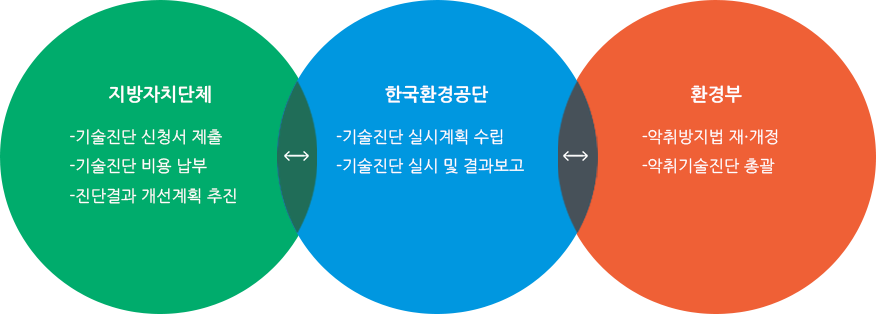

악취관리
「하수도법」제2조제9호에 따른 공공하수처리시설 중 1일 하수처리용량 5백세제곱미터 이상인 시설
「하수도법」제2조제11호에 따른 분뇨처리시설
「물환경보전법」제2조제17호에 따른 공공폐수처리시설
「가축분뇨의 관리 및 이용에 관한 법률」제2조제9호에 따른 공공처리시설
「폐기물관리법」제2조제8호에 따른 폐기물처리시설 중 음식물류 폐기물을 처리(재활용을 포함한다)하는 시설
「악취방지법」 제16조의제2제1항제1호에 따른 공공하수처리시설 및 분뇨처리시설에서 발생하는 찌꺼기(슬러지)를 처리하는 공공환경시설(생활폐기물 소각시설 제외)
「악취방지법」 제16조의제2제1항제4호에 따른 음식물류폐기물처리시설(재활용을 포함)에서 발생하는 수질오염물질을 처리하는 공공환경시설

처리시설 일반현황 조사 : 민원발생 현황, 기상조건, 처리대상 물질 등 조사
시설 운영 및 공정 진단 : 시설의 밀폐도 · 악취포집 상태 진단, 악취방지시설 성능 및 효율 진단
처리시설 개선대책 및 악취관리 최적화 방안 도출 : 시설의 악취발생 문제점 및 저감 대책 수립
| 구 분 | 연도별 추진실적(개소) | 비 고 | |||||
|---|---|---|---|---|---|---|---|
| 2018년 이전 | 2019년 | 2020년 | 2021년 | 2022년 | 2023년 | ||
| 공공환경시설 | 1062 | 173 | 164 | 164 | 167 | 164 | |
진단기관 : 한국환경공단
주 소 : 인천광역시 서구 서곶로 543 살리텍빌딩 2층(검암동 596-1) 한국환경공단 기후대기본부 대기환경처 악취기술지원부(우 22695)
연락처 : 032-570-1723 (Fax : 032-570-1740)
신청방법 : 한국환경공단 대기환경처 악취기술지원부로 진단신청 공문 제출(진단신청서, 환경오염물질 처리계통도)